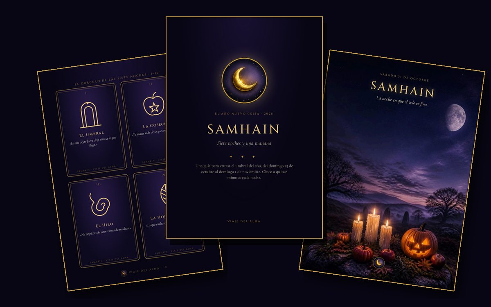

Samhain: siete noches y una mañana
Una guía para cruzar el umbral del año sin prisa. Del domingo 25 de octubre al domingo 1 de noviembre, un gesto sencillo cada noche: de cinco a quince minutos, una vela y tu diario.

Apúntate a la lista de espera y el día del lanzamiento te llega a tu correo un precio de estreno de 4,99 € (en lugar de 6,99 €) durante 48 horas.
Te escribiré para avisarte del lanzamiento y, de vez en cuando, con las lunas y las novedades de Viaje del Alma. Te borras cuando quieras respondiendo a cualquier correo. Privacidad.
¿Estás en la lista de espera? Usa el código de tu correo en el pago y te queda en 4,99 € hasta el sábado 3 de octubre a las 20:00.
Quiero mi guíaMarca la casilla para continuar.
Qué hay dentro
- DOM 25Barrer el umbral: preparar la casa para el año nuevo
- LUN 26La Luna llena del Cazador, en Tauro: lo que ya has cosechado
- MAR 27El hilo de la memoria: reunir los nombres que quieres honrar
- MIÉ 28Lo que no cruza al año nuevo
- JUE 29Levantar el altar de los ancestros, paso a paso
- VIE 30La tirada del velo: cinco cartas para el año que empieza
- SÁB 31Noche de Samhain: la vela en la ventana y la cena muda
- DOM 1La mañana del año nuevo: la semilla oscura
Solo en esta guía
- «El umbral de los ancestros», una meditación guiada de unos diez minutos para la noche del 31, grabada para esta guía junto al fuego. No está en ninguna otra parte.
- El oráculo de las siete noches: ocho cartas originales para imprimir, recortar y poner en tu altar. Una para cada noche, y una tirada especial para el 31.
- Si vives en el hemisferio sur, tu versión de primavera: las siete noches como camino hacia Beltane, el ritual de la noche del 31 y las horas de la luna en México, Colombia, Argentina y Chile.
Y además
- Una pregunta de diario cada noche, con espacio para escribir.
- Plantas y piedras de Samhain para tu altar: romero, castaña, granada, azabache, obsidiana…
- La receta de las manzanas asadas de ánimas, para la noche del 31.
- La lista de música «Samhain · Viaje del Alma» en Spotify: 70 minutos en tres tiempos, del altar al silencio, con Loreena McKennitt, Wardruna, Luar na Lubre y Dead Can Dance.
- Con las fases reales de la luna de esos días y las raíces hispanas de la fiesta: el Samaín gallego, el magosto, la castañada y el Día de Muertos.
Para quién es
Para quien siente que el otoño le pide cerrar algo y no sabe por dónde empezar. No necesitas experiencia, ni una baraja de tarot, ni un altar comprado: una vela y tu voz bastan para cualquiera de las siete noches.
Preguntas
¿Cómo la recibo?
Al terminar el pago vuelves a esta web y la descargas en el momento. Guárdala en el móvil o imprímela. Si algo falla, escríbenos a viajedelalma.app@gmail.com con el correo del pago y te la enviamos.
¿Y si ya ha pasado el 25?
Empieza por la noche del día en que estés. Cada noche se sostiene sola, y el altar se puede levantar en cualquier momento antes del 31.
Vivo en el hemisferio sur
La guía trae tu versión: allí estas noches son Beltane, la fiesta de la primavera, y tienes cada gesto adaptado, el ritual de la noche del 31 y las horas de la luna en tu país. Y si prefieres seguir la fecha de Todos los Santos, los rituales de memoria te sirven tal cual.
¿Cómo se paga?
Con tarjeta, Apple Pay o Google Pay, en la página de pago segura de Stripe. No guardamos tus datos de pago.
Viaje del Alma · Privacidad · Términos · Carta natal gratis